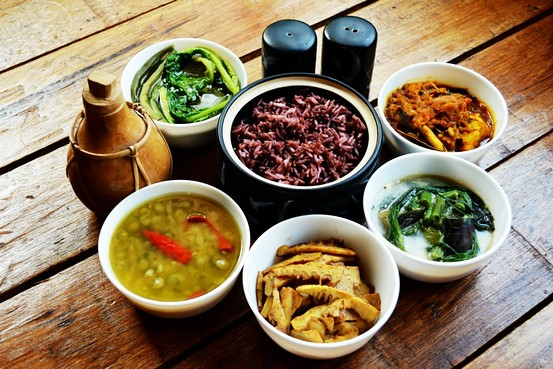

Indian Cuisine - Pamper your palate with exotic, diverse Indian cuisine.
Indian cuisine reflects a 5,000-year history of various groups and cultures interacting with the subcontinent, leading to diversity of flavours and regional cuisines found in modern-day India. Later, trade with British and Portuguese influence added to the already diverse Indian cuisine. Indian cuisine encompasses a wide variety of regional cuisines native to India. Given the range of diversity in soil type, climate, culture, ethnic group and occupations, these cuisines vary significantly from each other and use locally available spices, herbs, vegetables and fruits. Indian food is also heavily influenced by religious and cultural choices and traditions. There has also been Central Asian influence on North Indian cuisine from the years of Mughal rule. Indian cuisine has been and is still evolving, as a result of the nation's cultural interactions with other societies.

North-East
India's North-East is an exciting melange of various tribes and cultures. Their flavors and dishes are as unique as their colourful way of life. Most of their dishes use simple and flavourful fresh ingredients like Bamboo Shoot, Bhut Jolokia and local greens. Though most dishes consist of meat, it is interesting to note how these are very light and lip-smackingly enjoyable. The dishes are prepared with Mustard oil to intensify the flavour.In Assam, boiled rice served with Tengamach (sour fish) and Khar ( alkaline) is a popular item on the menu. Boiled rice cakes wrapped in leaves is a favourite snack in Arunachal Pradesh as is thukpa, a noodle soup, favourite of the Monpa tribe.In Meghalaya too, rice is the staple but combined with spicy meat and fish preparations.
Popular dishes are jadoh, kikpu, tung-toh, and pickled bamboo shoots. Mizoram’s cuisine is a blend of Chinese and north Indian cuisines. A popular dish is Bai, eaten with rice, which can be made from boiling spinach with pork and bamboo shoot. Another common dish is Sawchair made of rice cooked with pork or chicken. Dried fish, prawns, ghost chilli and preserved colocasia leaves are common ingredients of Naga cuisine, known for exotic meats cooked with simple and flavourful ingredients. Sikkim has its own unique dietary culture with specific cuisine and food recipes. Rice is the staple food. Meat and dairy products are also consumed depending on availability.
Central
The cuisine in Madhya Pradesh varies from region to region, with the north and west of the state being mainly based around wheat and meat, and the wetter south and east being dominated by rice and fish. Gwalior and Indore abound in milk and milk-based preparations. Bhopal is known for meat and fish dishes such as rogan josh, korma, keema, biryani pilaf and kababs such as shami and seekh. A popular dish is the bafla (wheat cakes) dunked in rich ghee which are eaten with daal (a pungent lentil broth). Another popular dish in the Malwa region is poha (flattened rice), served mostly for breakfast.Diet in Chhattisgarh is rice based. Fish and pork constitute a large part of Chhattisgarhi cuisine. Pork forms a major item in their diet.
West
Seafood, coconut milk, rice and paste are main ingredients of Goan delicacies and use of Kokum is a distinct feature. Goan cuisine is mostly seafood based and incorporates several Portuguese influences. Well known dishes include Pork Vindaloo and the Xacuti style of cooking.Maharashtrian cuisine covers a range from mild to very spicy dishes. Popular dishes include puranpoli, ukdichemodak and batatawada. Coastal Maharashtra, loosely called the Konkan, boasts of its own Konkani cuisine, while the interior – the Vidarbha area -- has its own distinctive cuisine known as the Varadi cuisine. Gujarati cuisine is primarily vegetarian and dhokla is indisputably the most popular snack. The typical Gujarati Thali consists of roti (a flat bread made from wheat flour), daal or kadhi, rice, and sabzi/shaak (a dish made up of different combinations of vegetables and spices).
East
With an emphasis on fish and lentils served with rice as a staple diet, Bengali cuisine is known for its subtle flavours, its confectionaries and desserts, and use of panchphoran (or five spices - fenugreek, Nigella seed, cumin seed, radhuni and fennel seed in equal parts). Bengalis prepare fish in innumerable ways – steamed or braised, or stewed with greens or other vegetables and with sauces that are mustard-based or thickened with poppyseeds. Oriya cuisine is similar to that from Bengal.Pakhala, a dish made of rice, water, and yoghurt, that is fermented overnight, is very popular in summer, particularly in the rural areas.Dairy products, such as yoghurt, buttermilk, butter, ghee, and lassi, are consumed in Bihar throughout the year. The traditionalpoha with yoghurt and sugar is popular. Bihar is famous for Sattuparanthas, which are paranthas stuffed with fried chickpea flour, Chokha(spicy mashed potatoes).
South
Food from Andhra Pradesh is known for its heavy use of spices and chillies. Telugu cuisine has evolved separately from Hyderabadi cuisine, the most famous of which is the Hyderabadi biryani, a mixture of rice, yoghurt, onions, meat and spices. In Karnataka, Masala Dosa, Rave Idli, and Maddur Vade are popular. Kerala cuisine has a multitude of dishes prepared using fish, poultry and meat. Kerala also has a variety of breakfast dishes like Appam, Idiyappam, Puttu, and Pathiri.The cuisine of the union territory of Puducherry, a French settlement for centuries, has an innovative French and Indo style. Tamil food is characterised by the use of rice, legumes and lentils, its distinct aroma and flavour achieved by the blending of spices. Sambhar and VathalKuzhambu are popular curries, eaten with plain or mixed rice while Idli, Dosa, Uthappam and Pongal are popular breakfasts.
North
Kashmiri cuisine has evolved over hundreds of years, and strongly represents several influences such as Central Asian, Persia, and the North Indian plains. The most notable ingredient in Kashmir cuisine is mutton (lamb), of which there are over 30 dishes.Wazwan, a multi-course meal in Kashmiri cuisine and a matterof pride in Kashmiri culture and identity, includes dishes that are meat-based (lamb, chicken, fish). Punjabi cuisine, on the other hand, can be non-vegetarian or completely vegetarian. Some favourites include stuffed paranthas and dairy products (especially paneer), Mah Di Dal (lentil) and Sasron Da Saag (mustard leaves). Tandoori food is a Punjabi speciality. Uttar Pradesh has also been greatly influenced by Mughal (Mughlai cuisine) cooking techniques which is very popular world wide. The Samosa and Pakora, among the most popular snacks in all of India, are also originally from Uttar Pradesh.